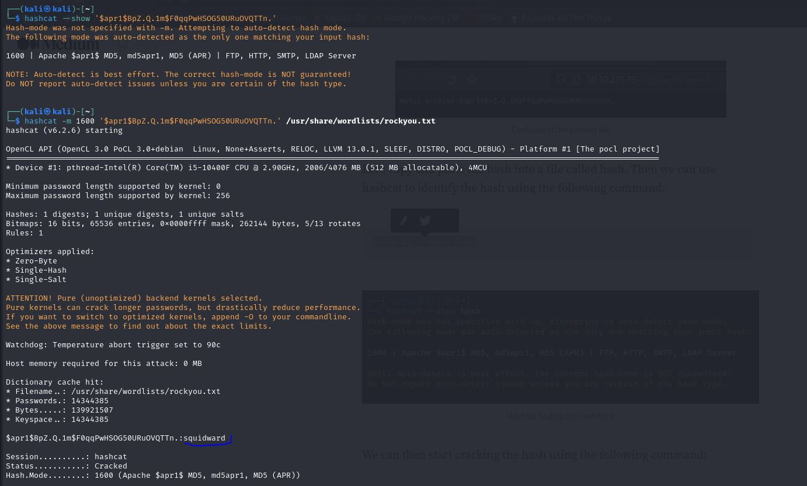

CTF Cyborg
2024-02-21
Standardowo jak w każdym takim zadaniu zacząłem od zbierania inforamcji o celu:
Przeglądając podstrony znalazłem ciekawe wiadomości miedzy twórcami strony oraz nazwę i hasło w formie hasha.


Hash ten rozpoznałem oraz złamałem z użyciem programu hashcat.
Początkowo myślałem że jest to nazwa i hasło do ssh aczkolwiek nie działo i po poszukiwaniach pobrałem ze strony archiwum tar w który między innymi był link do dokumentacji narzędzia borg oraz jak wypakować taki backup. Do czynności tej potrzebne było hasło które wcześniej uzyskałem.

Druga flaga wmagała roota ale po użyciu sudo -l dowiedziałem się że istenieje plik bash należący do użytkownika alex mający dostęp do suda a więc po protu wystarczyło go użyć jako przepustki do roota.